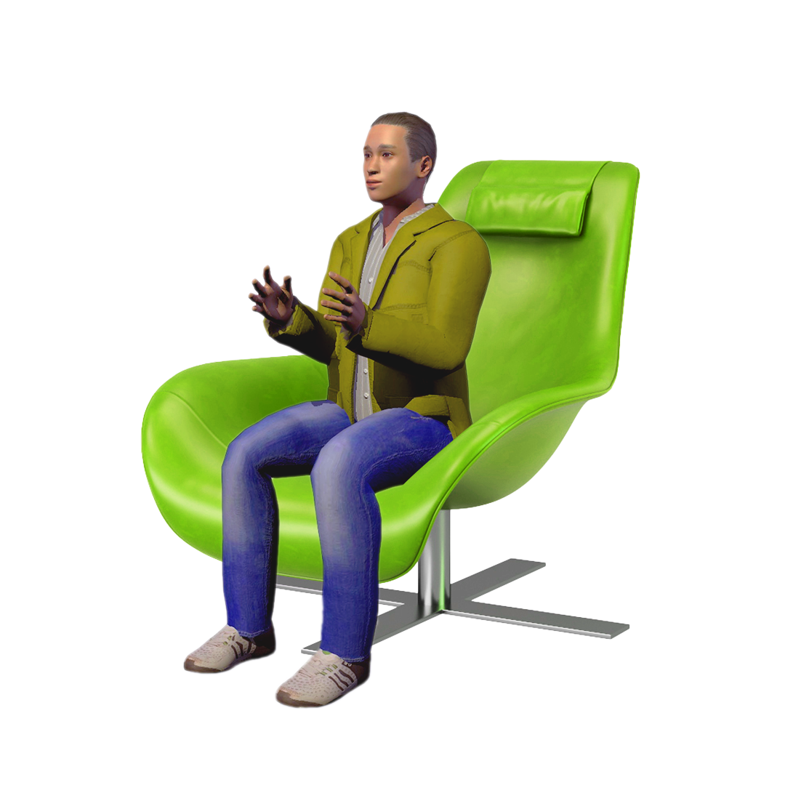

As virtual assistance develop more advanced algorithms to better manipulate human decisions, the personalisation of humans become an even more impactful tool.
The website provides a simulation of the human experience in a time when humanity’s free will is manipulated by technology. The user who is browsing the website will be provided with choices and personalised experiences based on their personal information and preferences.
The website provides a simulation of the human experience in a time when humanity’s free will is manipulated by technology. The user who is browsing the website will be provided with choices and personalised experiences based on their personal information and preferences.
